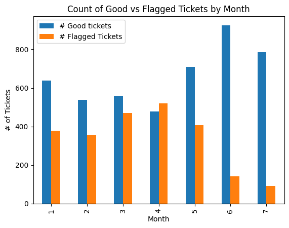
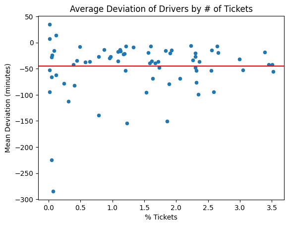
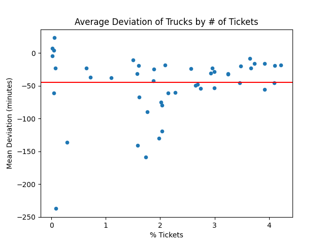
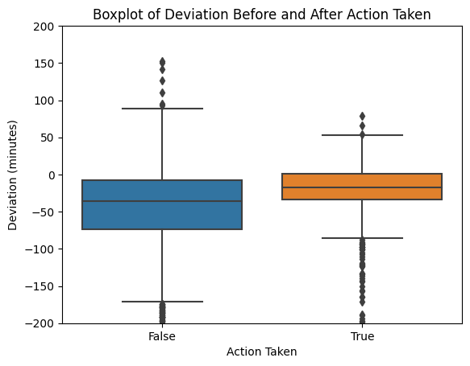
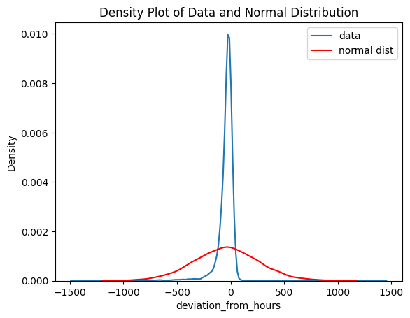
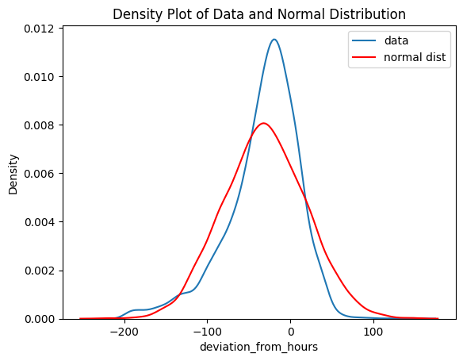
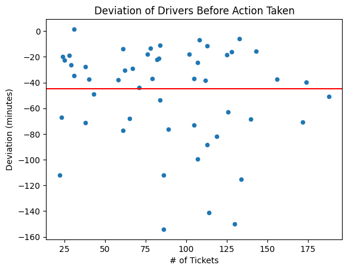

I was contacted by a local company that is responsible for sending trucks and hands to oil field locations across Texas in regards to possible fraudulent reports by drivers/employees. This was a 12 week contracted project from the end of July 2023 to the end of September 2023. Prior to being contacted, the company had checked a small sample of tickets and found that drivers were consistently over-reporting their hours when compared to the GPS information on the truck. Action was then taken by company leadership to correct the amount billed to their customers based on the limited findings at the time.
I was tasked with answering the following questions:
To answer these questions, I would need to manually go through the 7000 tickets from January 1st to July 31st of this year and find the start and end times listed on the tickets. This information would then be compared against the GPS activity of the truck, which would need to be collected from Samsara, along with a downloaded report for each GPS time frame used. An important note is that the drivers are allowed 45 minutes total for safety checks and such, so I was mainly looking for tickets where the absolute deviation was greater than 45 minutes.
Due to the sensitive nature of the request and a signed NDA, the company has asked to remain anonymous, and all identifying information in the data provided has been altered.
The information provided to me was originally a spreadsheet that took the form:
| Column Name | Contents |
|---|---|
| AR | 5 digit identifier for the invoice |
| Customer | String of the customer name |
| AR Start Time | NA, to be filled in, will be datetime obj |
| AR End Time | NA, to be filled in, will be datetime obj |
| GPS Start Time | NA, to be filled in, will be datetime obj |
| GPS End Time | NA, to be filled in, will be datetime obh |
| Difference in start times | NA, to be filled in, will be numeric |
| Difference in end times | NA, to be filled in, will be numeric |
| Truck # | 4 digit truck identifier |
| Service Date | Date the job on the invoice was started |
| Hours | Hours billed to the customer |
I was provided with approximately one month's worth of tickets at a time. The company had the information stored in an Excel spreadsheet, so the data entry was done in Excel. The tickets were scanned PDFs, so a PDF analyzing tool like that found in Azure Form Recognizer was considered for automation. However, each ticket was multiple pages, often not scanned in well, and were handwritten. I opted instead to use PyPDF2 to extract the first page of each ticket and combine these into a single PDF, where I could easily access the start time, end time, and AR number for each ticket. The start and end times were then entered in the row corresponding to the AR number.
The GPS data collection was more reasonable to automate. I was able to use Selenium to access Samsara and automatically find a truck during a given timeframe, and store the first and last times the truck was tracked in the timeframe in a Python dictionary. During this process, the script also downloaded the PDF of the GPS data. A separate Powershell script was used to appropriately rename and move the downloaded data. Finally, once all of the tickets had been recorded, I used Pandas to convert the dictionary to a DataFrame which could be used for analysis, and save a csv for the company's use.
There were issues with the way the data was stored. Often there were typos in the spreadsheet which could only be caught by manually comparing each ticket to the row in the spreadsheet. Typos were most commonly found in the date and truck columns. There were also typos in the AR numbers, and in the later months, AR numbers were no longer unique. This caused an issue when working with the DataFrame, so these values were corrected/adjusted as necessary.
By the time that I started working on the GPS side of things, certain trucks were no longer used by the company, and so their information was no longer available on Samsara. Since these blank entries provided no information, they were dropped before analysis. Similarly, a small number of jobs were performed that did not require the truck moving. This would look like two hours of driving according to the GPS while the ticket was invoiced for 12 hours, which I would like to exclude as this is not necessarily any wrongdoing on the part of the driver. However, as a contractor I was not privvy to the specifics of each job/site, unless the driver listed the information on the ticket (not often). Since there were so few of these data points and it was difficult at times to differentiate between this case and simple overreporting of hours, they were left in for the analysis.
Finally, for tickets that run back to back in the same truck, the GPS start/end times needed to be updated so that they were equal. This was an easy fix to do manually after the GPS collection. while performing this part, it came to my attention that there were tickets overlapping in the start and end times that were written on some tickets. This showed another possible way in which the drivers could be submitting fraudulent tickets, so a new column was created to keep track of and flag tickets that had such an overlap.
A small analysis was run for each month, and a full analysis was run and presented after each of March, May, and July were completed. In this section I will go through the analysis of the full dataset.
The first thing of interest was to see the deviation in start an end times, which was a simple calculation where the datetime value of the AR start/end time was subtracted from the GPS start/end time. These columns were converted to minutes, and for a fuller picture, a new column was created by combining the two difference columns to get the total deviation from billed hours. Here a negative value represents that there was more time reported on the ticket than recorded by GPS. The mean and median values for the dataset are shown to be -43 and -27, respectively. Both of these values are within the allowed 45 minute extension mentioned in the first section. Grouping the tickets by month and looking at the same values does show a trend from January through April where the average deviation steadily declines from -39 to -68. The 45 minute threshold is crossed by the mean values in February and by the median in April. Both statistics fall back below 45 minutes in May, and improved beyond the values in January in the following months.
Another point of interest was the volume of tickets flagged for having more than 45 minutes deviation compared to the total number of tickets. Of the 6992 tickets used for analysis, 2362 (approx 33%) of them were flagged. Looking at this breakdown by month in the figure "Count of Good vs Flagged Tickets by Month," we can see the same trend, and that April was by far the most flagged month with over half of the tickets being flagged. In the months following, the number of flagged tickets dropped, until the minimum of 92 flagged tickets (approx 10%) in July.
Based on the plot "Average Deviation of Drivers by # of Tickets" it appears as though the number of tickets and the mean deviation for a driver are not strongly correlated. We can see that the majority of drivers are above or around the red line denoting a 45 minute deviation, especially among the drivers with a higher number of submitted tickets. A similar story is told by the plot "Average Deviation of Trucks by # of Tickets." The data was also grouped by owner and a pivot table was formed. Similar trends were found in the data, shown in the notebook in the source code.
 In "Boxplot of Deviation Before and After Action Taken" we can see that the deviations are much less spread out, shown by the shrinking of the box from left to right. It is then the preliminary assumption that the action taken did reduce both the amount of offending tickets, as well as the severity of the offending tickets.
The data is both left-skewed (S~-4) and has a high Kurtosis (K~67). This implies that there are a large number of outliers that heavily affect the data, and that the data is not symmetrical about its mean, since the mean (-43) is lower than the median (-27). This poses a problem for hypothesis tests that rely on data that is close to normal.
However, if we restrict the data to be bounded by 200 minutes on either side, the data more closely resembles a normal distribution.
1. Has there truly been a problem with drivers consistently overreporting hours?
Based on the plots and tables shown, there is a strong indication that the problem was there. Since the dataset has a high Kurtosis, it is very "tail-heavy," or has many outliers. This information together with the skewedness of the data shows that there was a problem with overreporting in the early months.
2. Are all of the drivers engaging in this, or is it only a small group?
This question is best answered by visualization. The graph "average deviation vs % tickets by driver" shows a large variance in the reporting by drivers with a low number of tickets. For this reason, we will restrict the data to drivers with more than 20 submitted tickets. This gives the graph "Deviation of Drivers Before Action Taken," which shows over half of the drivers within the 45 minute timeframe. This does show that while the issue was certainly taking place, it was not every driver at fault. Further breakdowns by trucks and owner/operators shows a similar trend, though by April, each of the five owner/operators were flagged.
3. Was the action taken in mid-May effective in resolving this problem?
If we first look at all of the data, we see that the number/percentage of flagged tickets decreased dramatically in months 5-7. Further, "Boxplot of Deviation Before and After Action Taken" shows that the median deviation improved and the spread of deviation decreased, shown by the smaller box. The mean deviation from before action was taken was -53 minutes and after was -23. This looks like a solid improvement. After restricting the data to only include tickets with a deviation under 200 minutes, the data before and after the action was taken is close enough to a normal distribution for hypothesis testing to be done without transforming the data. In this case there is a statistically significant decrease in the mean deviation (p << 0.0001). We can conclude that the action taken was effective in resolving the problem.
The analysis and report was presented to the CEO and management of the company. After discussion, it was decided that the action taken previously was appropriate and that further action against the offending drivers was not necessary at this time. To the best of my knowledge the customers that were overcharged because of these issues have been contacted and resolutions have been put in place. Following the end of the contract, the company had decided that they would start implementing digital ticketing systems to further reduce the risk of this reoccurring.